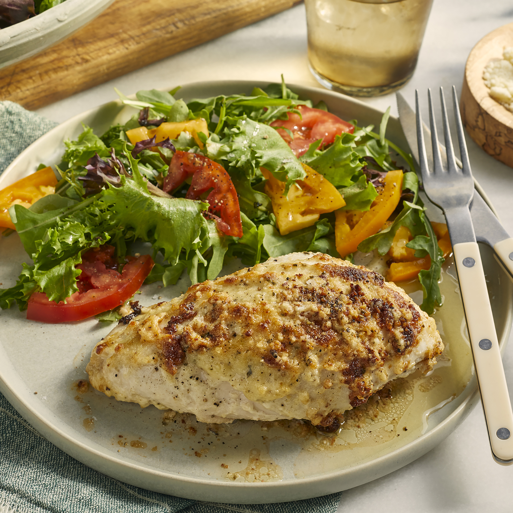

Chicken with mayo in it
Should be delicious
Ingredients
- 1 cup of mayonnaise
- 2 cloves of garlic, crushed
- 1 tablespoon of finely chopped fresh rosemary
- 1 teaspoon of salt
- freshly ground black pepper to taste
- 1 whole chicken, cut to 6 pieces
- 1/2 cup grated of parmesan cheese
Steps
- Preheat oven to 350 degrees F (175 degrees C).
- Stir mayonnaise, garlic, rosemary, salt, and black pepper together in a bowl.
- Place chicken pieces into a 9x13-inch baking dish, spread mayonnaise mixture over chicken, and top with Parmesan cheese.
- Bake until the juices run clear, chicken is no longer pink in the middle.
- Insert a meat thermometer into the thickest chicken piece reads at least 160 degrees F (70 degrees C), about 1 hour and 10 minutes.
Return to top
Return to main page